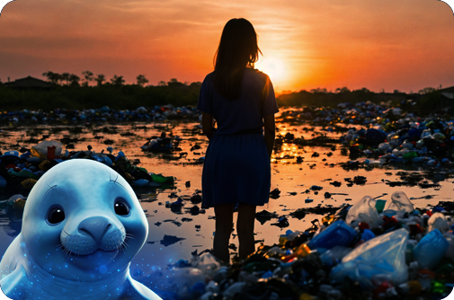

¡HOLA! Patagonia Mágica es un programa de concientización diseñado para educar a los chicos sobre la conservación y el respeto hacia nuestras especies marinas en las aguas de la Patagonia argentina. Nuestro objetivo es inspirar a las generaciones futuras a cuidar y proteger el increíble ecosistema marino de nuestra región a través de actividades educativas, recursos interactivos y experiencias emocionantes. Patagonia Mágica aprovecha la ternura que generan las crías de nuestras especies, convirtiéndolas en copilotos y embajadoras de nuestra misión de conservación.